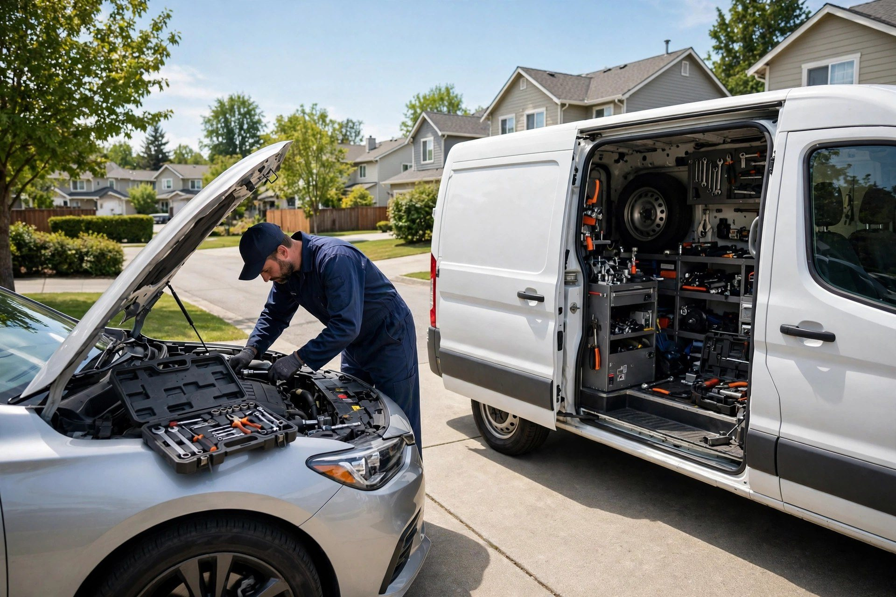
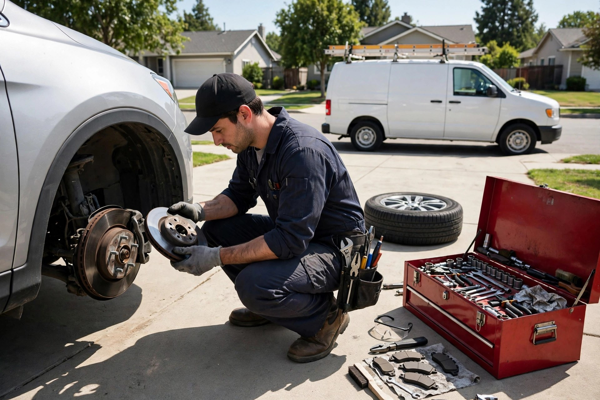
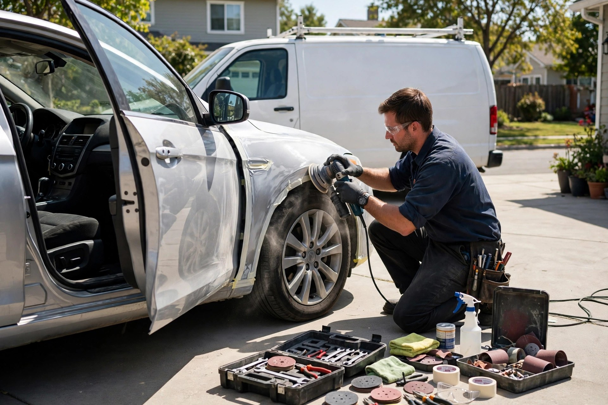
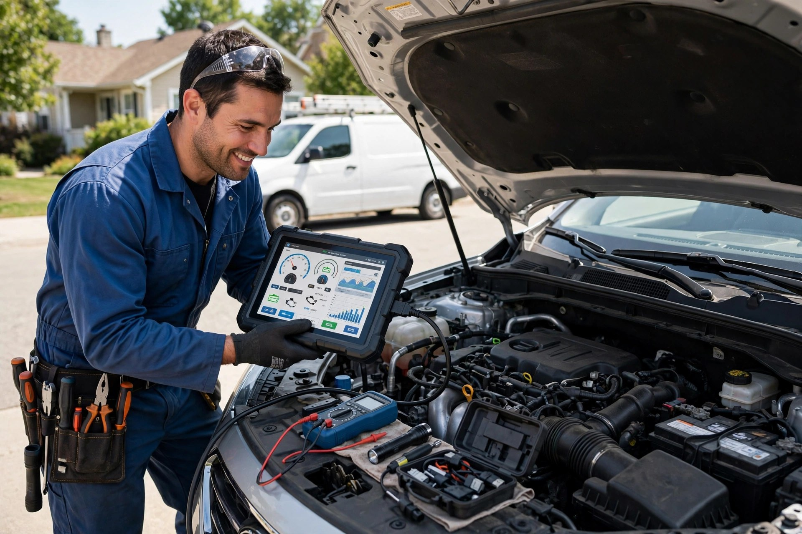

Mécanique mobile à domicile
Entretien et réparation chez vous ou au travail — fini les remorquages et les attentes au garage.

Trois-Rivières, Québec · Mécanicien mobile + carrosserie
On se déplace chez vous, à la maison ou au travail : mécanique, carrosserie, entretien et diagnostic — un travail honnête, sans remorquage.
Ce que nous faisons
Entretien et réparation chez vous ou au travail — fini les remorquages et les attentes au garage.
Bosses, égratignures et petites réparations de carrosserie — votre auto retrouve sa belle allure.
Plaquettes, disques et inspection complète du système de freinage — votre sécurité d'abord.
On trouve le vrai problème avec l'équipement moderne, directement dans votre cour.
Huile et filtre de qualité, changés chez vous en un rien de temps — tous véhicules.
Pose, permutation et équilibrage à domicile — y compris les changements saisonniers.
Toutes marques et tous modèles
Autos, VUS et camions légers — on s'occupe de tout, peu importe la marque.

Pourquoi nous choisir
Pas besoin de remorquer, d'attendre ou de perdre votre journée. On apporte l'atelier à vous : diagnostic juste, prix expliqué d'avance, travail garanti.
Simple comme tout
Décrivez le problème — on vous donne un devis gratuit et on fixe un rendez-vous.
On arrive chez vous avec tout l'équipement — pas de remorquage nécessaire.
Le travail se fait sur place, devant vous — vous repartez en route, tout simplement.
Sur le terrain


Nous trouver
Bon à savoir
Vous appelez, on fixe un rendez-vous et on arrive chez vous avec tout l'équipement nécessaire. La plupart des réparations se font sur place, sans remorquage.
Non — le devis est gratuit et confirmé avant chaque réparation. Pas de remorquage à payer, pas de journée de travail perdue.
Oui — autos, VUS et camions légers de toutes marques, avec des pièces de qualité.
Oui — bosses, égratignures et petites réparations de carrosserie directement chez vous.
Appelez-nous